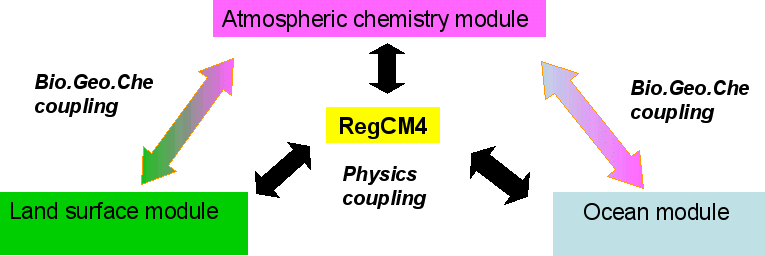

Modelling activities
-
Over the years I have used and contributed to developments in different community models including
Meso-NH, GEOS-Chem
and mostly the ICTP RegCM5 regional climate
model for processes relevant to climate, biogeochemistry and atmospheric chemistry.
- The chemistry and aerosol schemes (including dust cycle)
- The interface to the RRTM/McICA radiation scheme
- The slab-ocean parameterization
- The biogeochemistry interface to the CLM4.5 surface scheme
- Model diagnostics useful to assess perturbation and feedbacks

Some of these developments concerned for instance :
Example of simulation
RegCM simulation of mid-troposphere ozone (ppb) during the biomass burning season